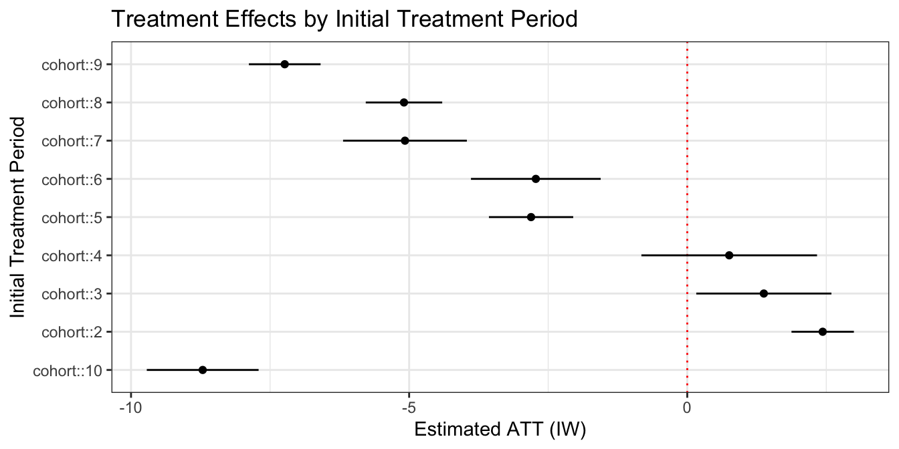
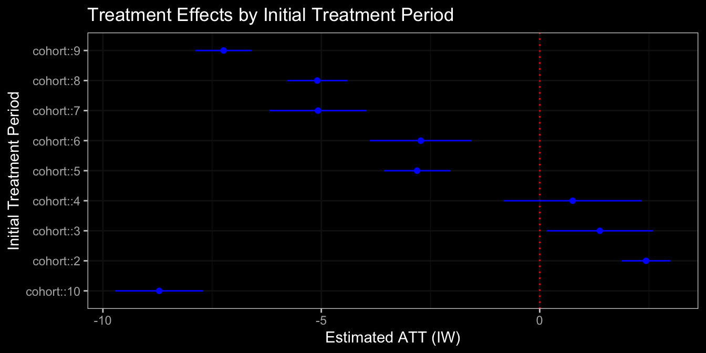

library(tidyverse)
# create first.treat
first.treat <- df %>%
select(treat, time, unit) %>%
filter(treat == 1) %>%
group_by(unit) %>%
summarise(first.treat = min(time))
# join first.treat to df
df <- left_join(df, first.treat)
# replace NA's (never-treated) in first.treat with big number
df$first.treat <- replace_na(df$first.treat, 10000)1 Interaction-Weighted
Sun and Abraham (2021)
What is the IW Estimator?
The Interaction-Weighted (IW) estimator, also known as sunab, is an estimator for DiD that solves the issues with TWFE in staggered settings. The estimator was proposed by Sun and Abraham (2021).
IW is a matching and reweighting estimator for DiD, with the matching part solving the “forbidden comparisons” problem of TWFE, and the reweighting part solving the “negative weighting” problem of TWFE.
First, the IW estimator “matches” treated units to control units in correct non-forbidden comparisons. It does this by separating all treated units into groups, grouped by their initial treatment year. Then, for group, IW compares treated vs. untreated for every year. This “matching” is done via interactions in regression:
\[ Y_{it} = \underbrace{\alpha_i + \gamma_t}_\text{fixed effects} + \underbrace{\sum_g \sum_{r ≠ -1} 1\{G_i = g\} \cdot 1\{R_{it} = r\} \cdot \tau_{gr}}_\text{comparisons for each group g and rel.time r} + \cov + \eps_{it} \]
\(G_i\) is a categorical variable that describes which initial treatment period unit \(i\) received treatment. \(R_{it}\) is a relative-time variable. Essentially, IW is estimating dynamic treatment effects for each initial treatment period group \(g\).
This matching will produce many different comparison estimates \(\tau_{gr}\). These \(\tau_{gr}\) are reweighted together, with weights determined by how many observations fall into each group \(g\) and relative time period \(r\). The \(\tau_{gr}\) can be aggregated into the overall ATT, Dynamic ATT’s with all groups combined together, and the overall ATT for each group \(g\) separately.
IW does not accommodate non-absorbing treatment. IW is also less flexible with covariates for parallel trends, since the linear model assumes a linear relationship between covariates and outcome (which might not always be realistic).
R: Running the Model
Our dataset df should be a panel or repeated cross-section, and have the following variables:
| Variable | Description |
|---|---|
unit |
A variable indicating the units/individual an observation belongs to in our data.* |
time |
A variable indicating time-periods in our study for each observation. |
outcome |
Outcome variable for each observation. |
covar |
(optional) covariate(s) to condition for parallel trends. |
first.treat |
This variable indicates the initial year of treatment adoption for each unit. For the never-treated, we should set the value of first.treat to a very large positive/negative value that is outside the range of time. |
*For repeated cross-section, the unit variable should be instead the group/level of which treatment is assigned. For example, if treatment is assigned by county/state, use that as the unit variable.
Creating a first.treat Variable
If your dataset lacks a first.treat variable, this is how you create one, using the other variables above.
*For repeated cross-section, the unit variable should be instead the group/level of which treatment is assigned. The treat variable should also be grouped by the same group/level.
With all the proper variables, we can estimate a IW model with the fixest package:
library(fixest)
iw <- feols(
fml = outcome ~
sunab(first.treat, time) + covar | unit + time,
data = df,
vcov = ~unit
)This model has now done the matching and estimating \(\tau_{gr}\). We now can choose different ways to aggregate these.
R: Aggregating the ATT
To aggregate the matched treatment effects \(\tau_{gr}\) into a singular ATT causal estimate for all treated observations, we can use the aggregate() function:
att <- aggregate(
x = iw, # IW model object
agg = "att" # output the ATT
)
print(att)#> Estimate Std. Error t value Pr(>|t|)
#> ATT -1.133749 0.2050705 -5.528584 2.882038e-07We can see the estimated ATT in the output table, as well as the estimated p-value in Pr(>|t|).
Extract the ATT Directly
If you are interested in extracting the ATT and confidence intervals directly from the att object for tables/figures, you can do the following:
att <- as.data.frame(att)
# extract att
att[1,1]
# extract std. error
att[1,2]#> [1] -1.133749
#> [1] 0.2050705This can be useful if you are making a graph/table comparing different estimators.
R: Aggregating Dynamic Effects
We can plot the dynamic treatment effects using the IW object estimated when running the model:
library(ggfixest)
library(ggplot)
plot <- ggiplot(
# required options
object = iw, # input your original iw model
ref.line = FALSE, # we will add our own line later
# (optional) aesthetic options
xlab = "Time Relative to Treatment", # x-axis label
ylab = "Dynamic ATT Estimate", # y-axis label
main = "Dynamic Treatment Effects (IW)", # title for plot
)
plot +
# select how many period to display
xlim(-8, 8) +
# add reference lines for treatment beginning and 0 causal effect
geom_vline(xintercept = -0.5, linetype = 3) +
geom_hline(yintercept = 0, linetype = 3, color = "red") +
# ggplot theme (optional, change to your liking)
theme_bw()
Finding Exact Dynamic Coefficient Values
If you want exact dynamic coefficient values (to see or for a table), we have to use the aggregate command
dynamic <- aggregate(
x = iw, # IW model object
agg = "period" # output the dynamic effects
)
head(dynamic) # print(dynamic) to see all the coefficient values#> Estimate Std. Error t value Pr(>|t|)
#> time::-9 0.35176562 0.3590732 0.9796487 0.3297742
#> time::-8 -0.07900914 0.2974701 -0.2656036 0.7911262
#> time::-7 0.10104016 0.3669646 0.2753403 0.7836591
#> time::-6 -0.05640239 0.3089161 -0.1825816 0.8555195
#> time::-5 -0.29530929 0.2939543 -1.0046095 0.3176640
#> time::-4 -0.30372133 0.2491128 -1.2192120 0.2258144R: Aggregating Group ATT
If we are interested in how the ATT differs by year of treatment adoption, we can also aggregate effects by initial treatment period group:
group <- aggregate(
x = iw, # IW model object
agg = "cohort" # output the dynamic effects
)
# print(group) if you want to see the exact group-ATT numbersThere isn’t a quick way to immediately plot these estimates, but we can manually create a ggplot:
library(tidyverse)
# make group a df
group <- as.data.frame(group)
# add cohort period to group df
group$period <- rownames(group)
group$period <- as.factor(group$period)
# calculate lower and upper conf intervals
group$lower <- group$Estimate - 1.96*group$`Std. Error`
group$upper <- group$Estimate + 1.96*group$`Std. Error`
# ggplot
ggplot(data = group, aes(x = Estimate, y = period)) +
# vertical line at 0 treatment effect
geom_vline(xintercept = 0, color = "red", linetype = 3) +
# plot the treatment effects
geom_point(color = "blue") +
# plot the confidence intervals
geom_linerange(aes(xmin = lower, xmax = upper), width = 0.2, color = "blue") +
# title (optional)
labs(title = "Treatment Effects by Initial Treatment Period") +
# x-axis and y-axis labels (optional)
xlab("Estimated ATT (IW)") + ylab("Initial Treatment Period") +
# theme (optional, change to your liking)
theme_bw()
Additional Resources
Sun, L. and Abraham S. (2021) ‘Estimating Dynamic Treatment Effects in Event studies with Heterogenous Treatment Effects’, Journal of Econometrics, 225(2), pp. 175-199. Available at: https://arxiv.org/abs/1804.05785
Additional Links:
- Fixest documentation for sunab() function.
- Fixest documentation for aggregate() function.
- Asjad Naqvi page on sunab.